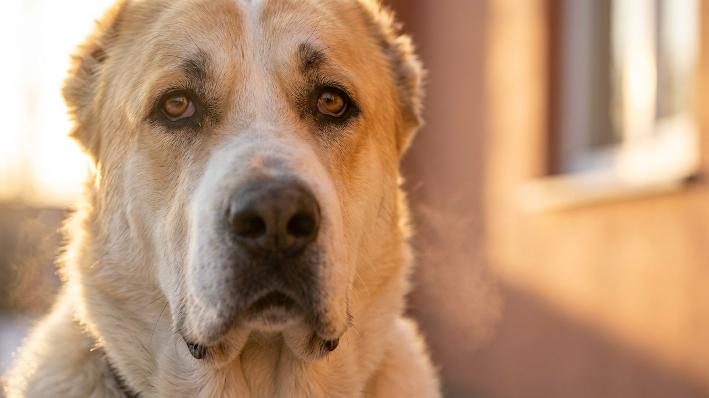

Щенок алабая в 2 месяца — пушистый и покладистый. В 14 месяцев это 50–65 кг собаки, которая самостоятельно решает, кому доверять, а кого не пускать. Среднеазиатская овчарка — одна из немногих пород, где ошибки первого года практически невозможно исправить потом. Ниже — четыре вещи, которые определяют, каким вырастет ваш алабай.
🐾 Спросите AI-ветеринара прямо сейчас
AnimaLife — приложение, где AI-ветеринар отвечает на вопросы о кошке или собаке 24/7. Бесплатно, без записи и очередей.
Алабай — не охранная порода в понимании «его нужно обучить охранять». Среднеазиатская овчарка охраняет территорию и семью по умолчанию, без тренировок. Тысячи лет отбора в условиях степи сделали своё дело: собака сама определяет угрозу и реагирует на неё. Задача владельца — не усилить этот инстинкт, а научить собаку управлять им в городских условиях.
Это не собака для новичка. Алабай не будет выполнять команды из послушания — он оценивает ситуацию сам. Если хозяин не воспринимается как авторитет, среднеазиатская овчарка принимает решения самостоятельно.
Критический период у алабая — с 6 до 16 недель. Что не показали щенку в этот срок, будет вызывать настороженность или агрессивную реакцию всю жизнь. Минимальная программа до 4 месяцев:
Среднеазиатская овчарка, выросшая в изоляции, становится опасной не из злобы — а из страха перед незнакомым миром. Это самая частая причина, по которой взрослых алабаев передают в приюты.
Алабай в квартире — рабочий вариант при условии достаточной нагрузки и дисциплины. Порода выносливая, но не гиперактивная: ей нужны длительные прогулки (1,5–2 часа в день для взрослой собаки), а не бесконечные игры. Без выхода энергии алабай становится деструктивным.
С детьми среднеазиатская овчарка уживается хорошо — если выросла рядом с ними и границы соблюдает вся семья. Алабай не потерпит, если ребёнок дёргает его за хвост, а взрослые игнорируют это. Правила должны быть одинаковыми для всех — иначе собака выстраивает собственную иерархию.
Алабай не реагирует на жёсткость — доминантная порода воспринимает физическое давление как вызов, а не как сигнал подчиниться. Авторитет строится через последовательность: одни и те же правила каждый день, спокойная уверенность хозяина, предсказуемость.
🐾 Дневник здоровья питомца — в кармане
Вес, прививки, симптомы и напоминания в одном приложении. AnimaLife следит за здоровьем питомца вместо вас.
🐾 Понравился разбор?
Подпишитесь на канал — каждый день разбираем по одному тревожному симптому у кошек и собак: что в пределах нормы, а когда пора к врачу. Подпишитесь, чтобы не пропустить разбор, который может спасти здоровье вашего питомца.
Материал носит информационный характер и не заменяет очную консультацию ветеринара.